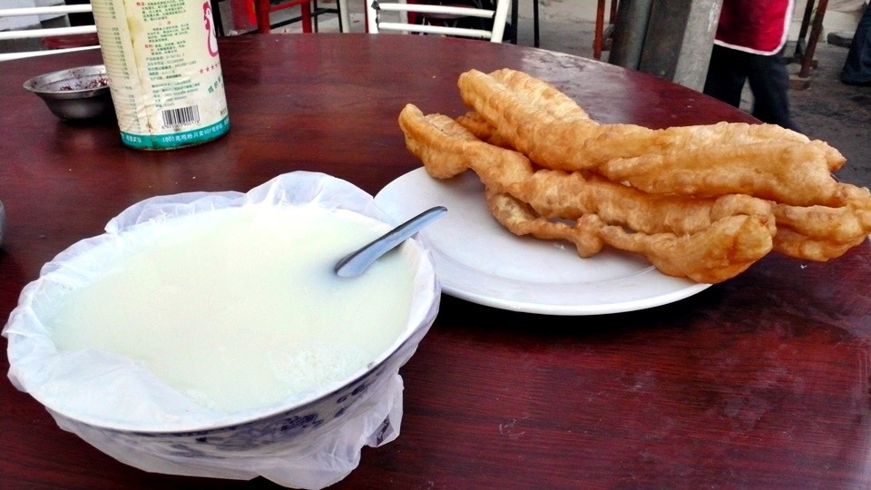
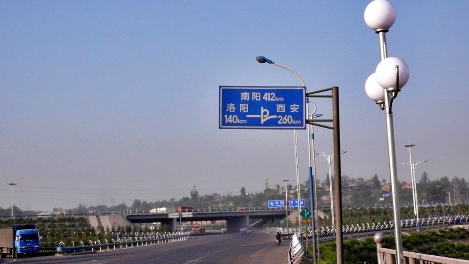
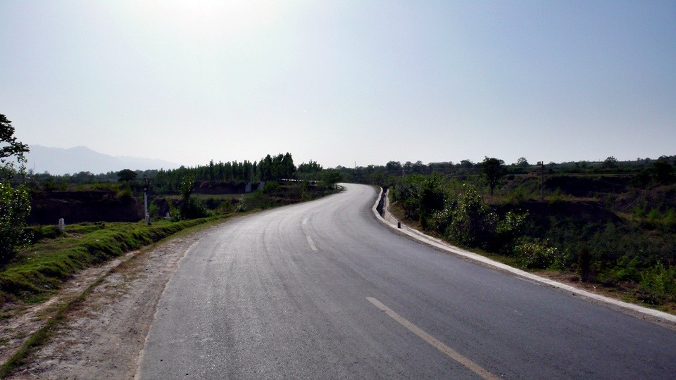
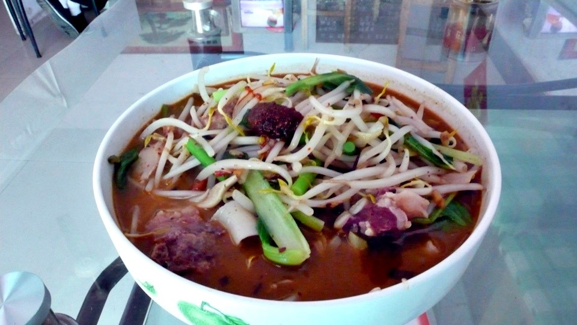
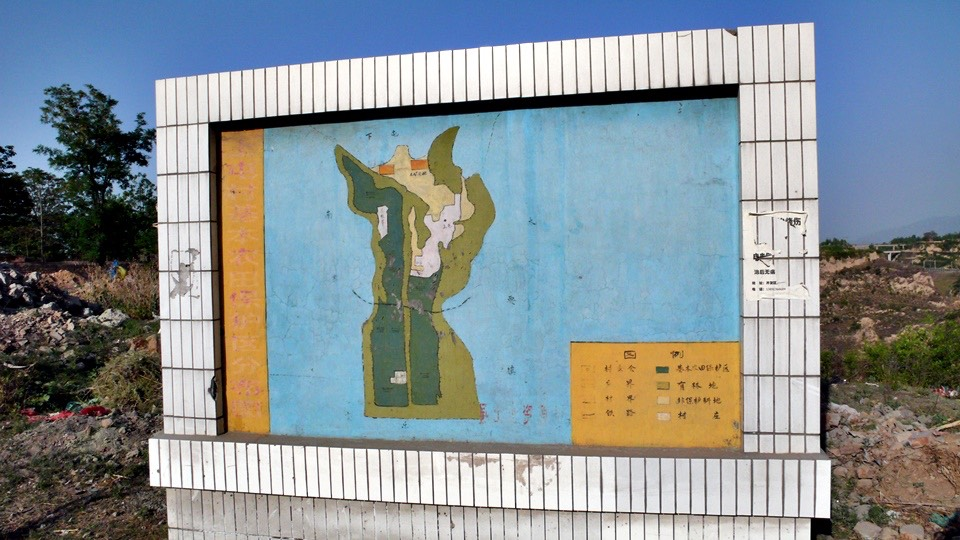
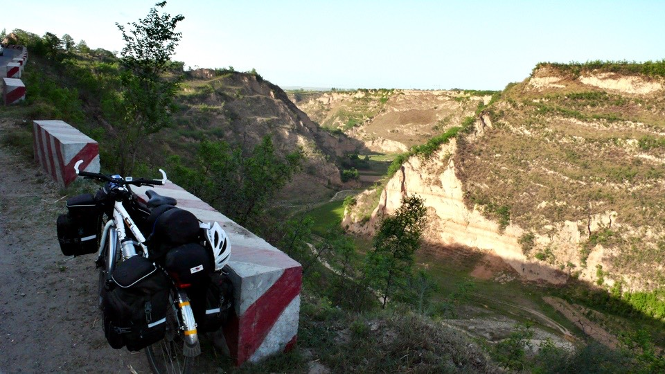
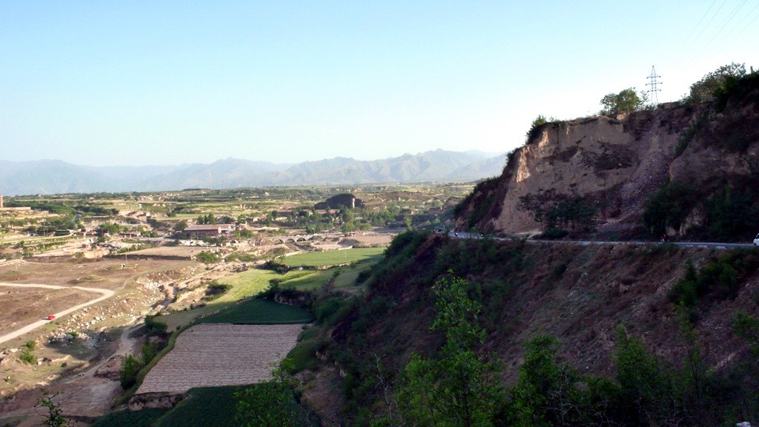
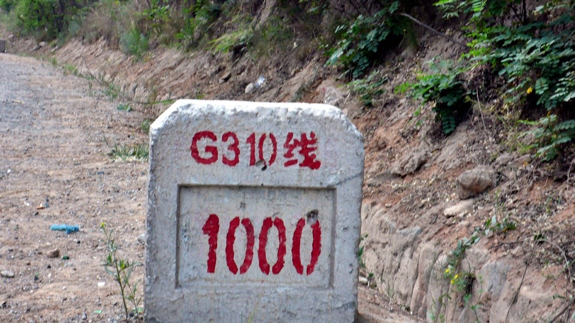
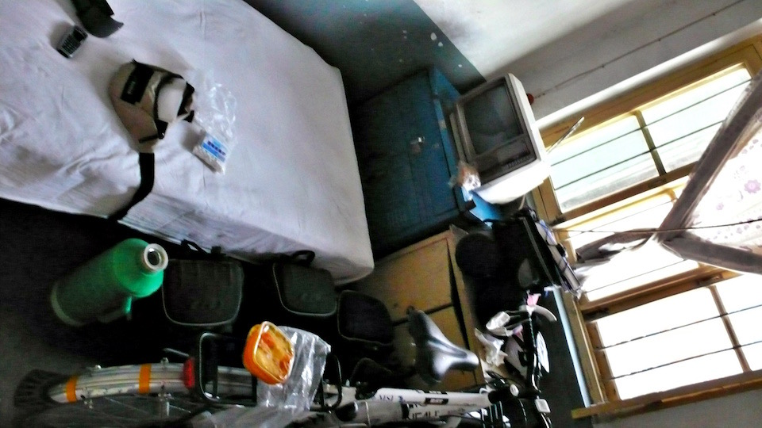
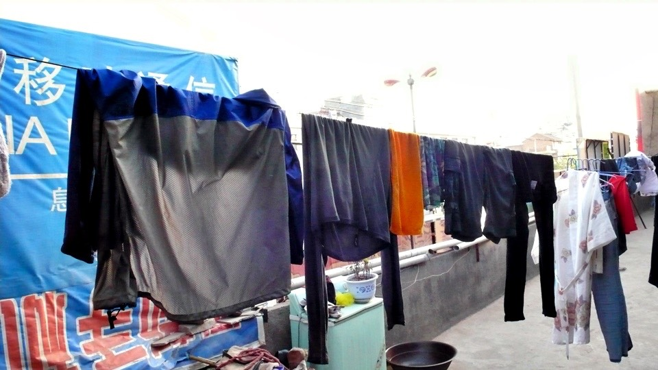

“KEEP OUT, IT IS TAKEN”
When I was pooping in the public restroom in the early morning, I heard footstep outside.
Even I had made myself loud and clear; the person still took a peek inside the restroom.
“That’s alright, I am a man was well” said the man
He walked in, took off his pants, and took a dump, right in front of me.
We were only divided by a 50 centimeter high mini wall.
Even it was expected, I still could not handle it.
Well, let’s do it together then.
I covered my mouth and nose with a towel.
The man did not mind shitting together, and insisted on chatting me up.
He asked if I knew the distance between here and a city in ShaanXi province.
I said “I don’t know, I am not a local”, and stopped the conversation promptly.
That man started to talk about an interview in that city, looking for work, and needing help for job arrangement…
I did not talk when I pooped, maybe read animated magazines.
Even frightened, I still had a good poop to make me feel 100%
Paid two dollars RMB for my breakfast, deep-fried Chinese doughnuts and soy milk
(BTW, the doughnuts were small and the soymilk was diluted with water for my taste).

Usually three doughnuts cost 50 cents RMB and soy milk cost 50 cents RMB, I did not haggle with the store owner though.
However, I started to care about such small money just ten days after I arrived in China.
I changed my attitude, probably because my favorite ice pop costs me 50 cents, and 50 cents became a norm price.
The breakfast did not keep me feeling full; I bought five red bean buns, five for 30 cents, as my snacks before set off.
Continued with climbing up and down, but the situation was better than yesterday, more down hills.
Generally speaking, it was an easy climb up.
The distance between SanMenXia and XiAn was 260 KM, I probably had to make it a two-day trip.

The mileage signs here were ridiculous; sometimes the discrepancy in distance could be more than 10 KM.
The mileage signs indicated that I had advanced 30 KM,
but the truth was I just rode 100 meters or the name of the same road
shown on the sign changed back and forth between Route 206 and Route 310.
Route 310 could take me all the way to ShaanXi provice,
if I made it to ShaanXi province; half of the trip from SanXiaMen to XiAn would be finished.

Kept climbing up and down in mountains, one hilltop followed by another hilltop, hilly, hilly, but hilly
Lunched at a nice restaurant where I could take a break and hide from the sun;
the one hour lunch break was precious to me.
Vigorous exercise increased appetite. Just finished the five red bean buns on the way not long ago,
when the fry pork chop noodle was served, I ate it up.

Some places had map boards, however, the maps were badly drawn, and nobody could read them

My newly developed fun is looking for roadside fruit stands selling pineapples at small villages.
In addition to fruit stands, I also looked forward to roadside kiosks.
China was so overpopulated; it seemed that human replaced machines.
The roadside kiosks were operated by old women, nothing fancy about them but a beach umbrella and a white refrigerator.
The roadside kiosks carried beverages and cigarettes.
I did not buy from them except I was out of water or exhausted, because the beverages were overpriced.
Since I found out the kiosks carried ice pops; I always stopped by and ask for white sugar ice pops.
If they had them in stock, I would buy one, holding it in my mouth and enjoying the cold sensation.
A method how not to get lost was developed along the way; therefore, it was not necessarily to read maps or road signs.
Following commuter bus as simple as it gets.
Fully loaded commuter buses ran between cities. When they passed by, I always carefully read the bus route on the windshield.
If the bus headed toward my destination, I was surely on the right track, kept going!

When I was struggling up a uphill in the hot afternoon sun,
I spotted an old man at his sixty pulling a heavy loaded two-wheel cart. The cart was filled up with bottles for recycle.
An old woman behind the cart was pushing it to help the pulling.
They paired up to move the cart up to the steep slope just like me.
All of sudden, I was grateful for what I had got and who I were, no more complain!

I felt like to stop and help them out; however, it was just a thought.
I had to fulfill my goal, B2P/Bike to protect our Planet

Route 310 ran from HeNan province to ShaanXi province, I saw no province border sign along the way, but biked mindlessly.
Shouldn’t I have entered ShaanXi province?
Rode into a bustling town after a hilltop
Ma’ma, where am I? HeNan or ShaanXi” I asked
I was not aware that I had arrived ShaanXi and done for the day!
Happily found a cheap hostel, 10 dollars RMB for one night, the room was even better than the 20 dollar room I had yesterday.

Washed clothes before sunset, I had to wear the same clothes tomorrow

Dinner was at “Xhue Family Original” run by a three generation family,
the family got the same last name as mine, Xhue. I felt good to support the restaurant.
My dinner included noodle, spicy bean sprout salad, and “BaoMo”.
It seemed nice to have salad on the hot summer night, wow! the salad was a bit spicy
BaoMo was baked bun stuffed with braised meat.
I got into this bustling city just by crossing a hill, who would knew what was waiting for me next?